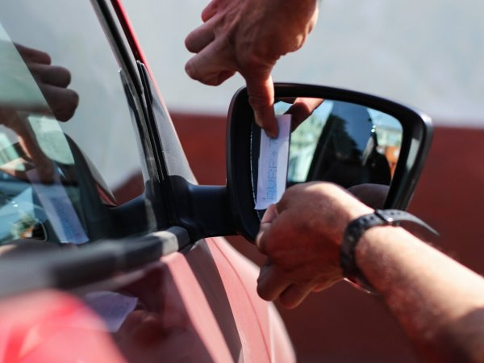

Grabado de patentes: ¿por qué se retiró el reglamento de Contraloría?
 Estar en pareja, tener un hijo y el alcohol: las agravantes de la violencia intrafamiliar que sufren las chilenas
Estar en pareja, tener un hijo y el alcohol: las agravantes de la violencia intrafamiliar que sufren las chilenas
 Cómo Chile pasó de ser el líder de vacunación en la pandemia a tener hoy solo al 17% de su población de riesgo inoculada
Cómo Chile pasó de ser el líder de vacunación en la pandemia a tener hoy solo al 17% de su población de riesgo inoculada